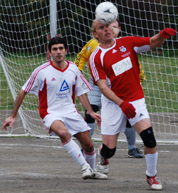
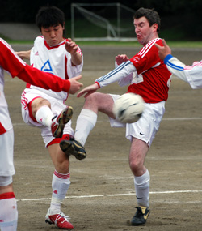

|
OiFuto dirt, Sunday 30th March,
With just four league games remaining The British Embassy realize its going to take a massive effort to ensure their status in T.M.L League one next season. That survival fight began in earnest on Sunday against a slick Swiss Kickers side at Oifuto.
Captain ‘Bites yer legs’ Ferdy fresh from a twenty four hour flight from Argentina roused the team before the game with an impassioned speech about the ‘Do or Die’ spirit of the Alamo. Pumped up and ready to go the team marched out with fire in their hearts and beer in their bellies.
The first half was an even affair with both teams playing some neat football on a surface that does not really allow a flowing, passing game. The Embassy probably had the clearer-cut chances with two or three one on ones with the Swiss keeper that went unpunished either by poor finishing or good goalkeeping. Osamu and Tetsuro were both having great games on the right and left wings and even the full-back Tim wanted to get in on the attacking action. As he advanced forward like the nearby Bullet Train, Mark found him with a perfect pass only for the ref to give a dubious off-side. Rob ‘The Bulldozer’ Horsefield and Gazza were bossing the centre of the field and the Embassy looked comfortable for the first forty minutes.
At half-time the teams went in at 0-0 and it was back to Captain Ferdy to ready the troops for what was going to be a hard fought second half.
A problem for the Embassy this season is that they seem to switch off at half-time and all the good work from the first-half goes to waste. Well, the players were determined that this wouldn’t happen during this game. The Embassy came out fighting and was unlucky not to go ahead with some great play between Steve and Alex which resulted in a good long range effort from Alex which went just over the bar.
The Swiss kept probing on the counter attack and were the first to draw blood when the ref gave them a free kick just on the edge of the penalty box. Captain Kirk who is a big threat to any T.M.L team stepped up and unleashed an unstoppable shot into the top right corner. Swiss 1-0 Embassy. Keith having had a quiet game in the Embassy goal, his first notable action was to pick the ball out of the back of the net.
Earlier in the season that would have been the end of the game for the Embassy, but these days they are made of tougher stuff. Even the Japanese players have incorporated the British Bulldog spirit with Taka.Y screaming at his fellow players to win the second ball all game. Their efforts finally paid off with just twenty minutes to go, when Silv and Steve linked up with a great passing move before Steve crashed the ball into the bottom corner. Swiss 1-1 Embassy. It has to be said that it was the most difficult chance Steve had all day having missed easier chances earlier in the game, but it also has to be said that without his lethal finishing this season the Embassy would already be sunk without a trace.
For the last twenty minutes both sides had chances to win it and in my biased opinion the Embassy should have won it, but it wasn’t to be and it finished Swiss 1-1 Embassy.
A great performance and a very important point for the Embassy. The fight for survival continues into next week. Like Rocky Balboa they refuse to be knocked out and will surely get back up and dust themselves down for the next big contests spurred on by those immortal words from Captain Ferdy ‘Lets Have It’.
Report by Keith Crowley
|